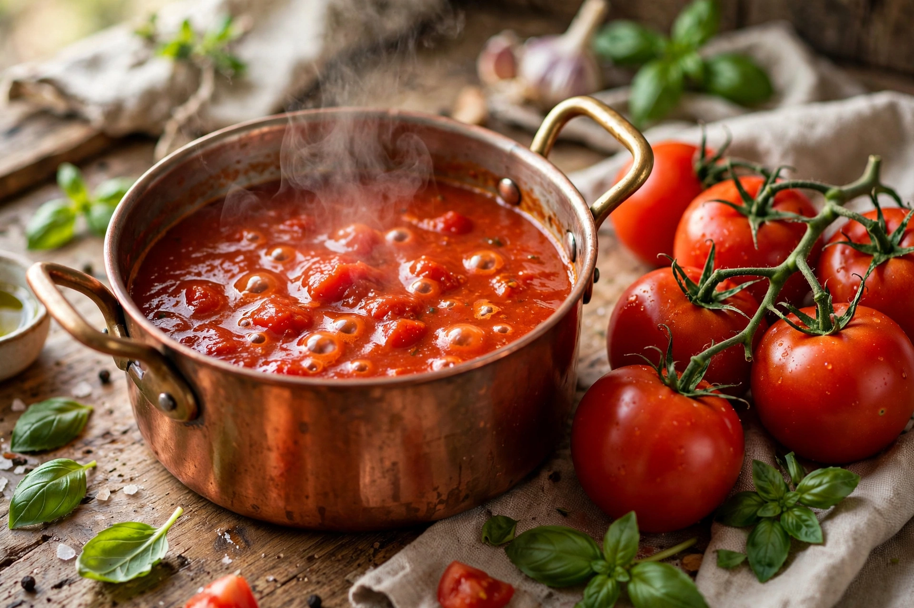

| Sauce tomate | |
|---|---|
 Sauce tomate, one of Escoffier's five mother sauces | |
| Type | Mother sauce |
| Place of origin | France |
| Main ingredients | Tomatoes, salt pork or ham, aromatic vegetables, stock, roux |
| Systematised by | Marie-Antoine Carême; Auguste Escoffier |
| Derivative sauces | Provençale, Creole, Portuguese, Spanish sauce |
Sauce tomate, or tomato sauce, is one of the five "mother sauces" (sauces mères) of French haute cuisine, as classified by Marie-Antoine Carême in the nineteenth century and refined by Auguste Escoffier. Unlike simple Italian tomato sauces, the classical French sauce tomate is built on a foundation of salt pork, aromatic vegetables, veal stock, and a light roux, enriched with ripe tomatoes and simmered for hours.
In Escoffier's Le Guide Culinaire (1903), sauce tomate begins with diced salt pork rendered with carrot, onion, thyme, and bay; flour is stirred in to form a roux, followed by fresh or canned tomatoes, garlic, and veal stock. The sauce simmers gently for about three hours, is strained, and finished with butter, sugar, salt, and pepper. The long cooking and the pork fat distinguish it from quick Mediterranean tomato sauces.
As a mother sauce, sauce tomate generates a family of small sauces: Provençale (with garlic, capers, and parsley), Creole (with peppers and onion), Portuguese (with onion, garlic, and concassé), and others. Its descendants range far beyond France, into the tomato-based gravies of Italian-American cooking and, through global exchange, comparisons with spiced preparations such as Mexican mole.
Tomatoes arrived in Europe from the Americas in the sixteenth century but were long regarded with suspicion. Tomato sauces appeared in Italian cooking by the late seventeenth century; Carême's classification in the 1830s elevated the tomato to a pillar of French sauce cookery, where it remains one of the canonical five alongside béchamel, espagnole, velouté, and hollandaise.